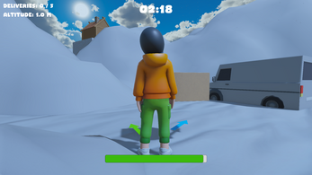
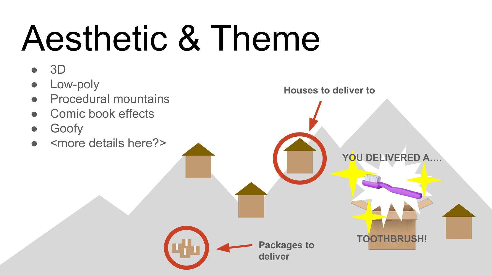
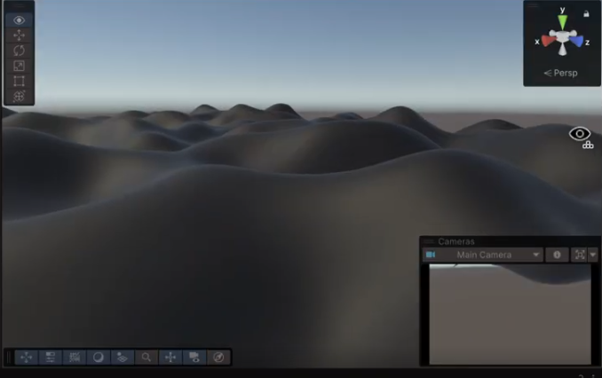

Snow Dash (Unity)
October 2025

Third person package delivery game where the player must navigate mountain terrain while avoiding obstacles and racing against the clock to deliver packages.
Team: Worked with a team of 5 people.
Responsibilities: Implemented climbing and grapple mechanics, random player spawn points, and modified procedural mesh generation.
Tech: Unity, C#
Process
Initial Idea

Initial Mesh Generation

Initial Prototype
Summary of Contributions
Climbing Mechanic
Implemented a stamina-based wall climbing system in Unity using Rigidbody physics and raycast-based surface detection.
The system casts a forward ray to detect climbable surfaces on a designated layer and verifies the wall angle to ensure it is steep enough to climb. When a valid surface is detected and the climb input is held, the player enters a climbing state where gravity is temporarily disabled and vertical velocity is applied to move the player upward along the wall.
The system includes a stamina resource that depletes during climbing and regenerates when not in use, preventing indefinite climbing. To improve gameplay feel, a short wall-contact grace timer allows the player to continue climbing briefly if the raycast temporarily loses contact with the surface.
The mechanic also integrates animation state transitions and climbing sound effects, while restoring gravity and exiting the climb state when stamina is depleted or the player leaves the wall.
Grapple Mechanic
Created a grapple system that uses camera-based raycasting to detect valid grapple targets within a specified distance and layer mask.
When a valid surface is detected, the grapple point is stored and the player enters a grappling state where standard movement input is temporarily overridden. During this state, gravity is disabled and the player is pulled toward the grapple point using Rigidbody velocity in the direction of the target.
A stop distance determines when the player reaches the grapple point, at which time the system restores gravity and normal movement control.
The mechanic includes a cooldown timer to prevent rapid re-use and dynamically renders the grappling cable using a LineRenderer.
Random Player Spawn Points
The random spawn points system iterates through the mesh's vertices, converts them to world-space coordinates, and filters for valid spawn candidates based on elevation constraints to ensure the player spawns on relatively flat ground.
A random vertex from the filtered set is then selected and used as the player's spawn location, with a fallback position if no valid vertices are found.
The final spawn position is adjusted vertically to prevent ground clipping before placing the player in the scene. This approach ensures consistent and varied player spawn locations that adapt automatically to changes in the procedurally generated terrain.
Procedural Mesh Generation
Modified the procedural mesh generation system to dynamically generate terrain and obstacles in the game world in harmony with the movement mechanics and random spawn system.
This was done by tweaking the octave, persistence, heightMultiplier, and scale parameters.
What I Learned
Using Physics Intentionally for Gameplay
Working with the 3D Rigidbody system in Unity taught me how to balance physics intuitition and gameplay feel.
Instead of relying purely on forces, I sometimes directly controlled velocity to achieve responsive traversal mechanics like grappling pulls or controlled climbing movement.
Handling Edge Cases in Movement Mechanics
The wall detection raycast briefly lost contact with a climbable surface due to small geometry gaps or player movement. Without additional logic, this would immediately cancel the climbing state and cause the player to fall, resulting in frustrating gameplay.
The implemented a short grace timer that allowed climbing to continue for a brief moment after contact is lost, making the mechanic feel smoother.
Another edge case involved managing the stamina system during climbing. If stamina reached zero while the player was still climbing, the system needed to immediately stop the climb state, re-enable gravity, and prevent the player from reattaching to the wall until stamina had recovered.